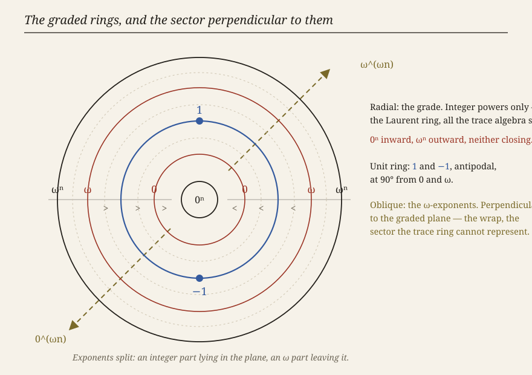
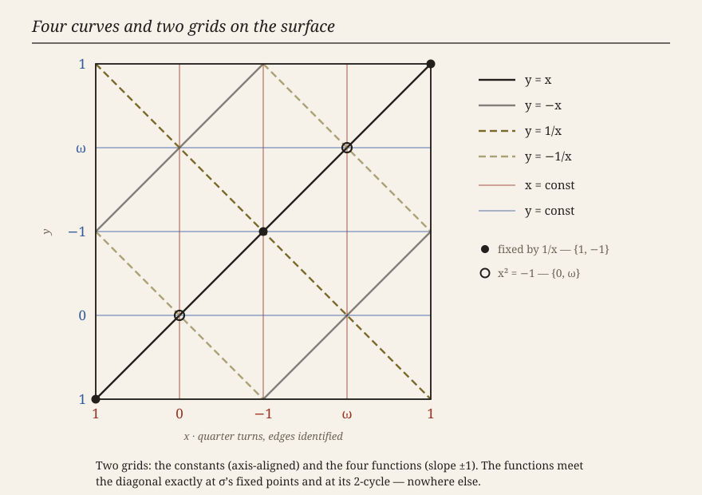
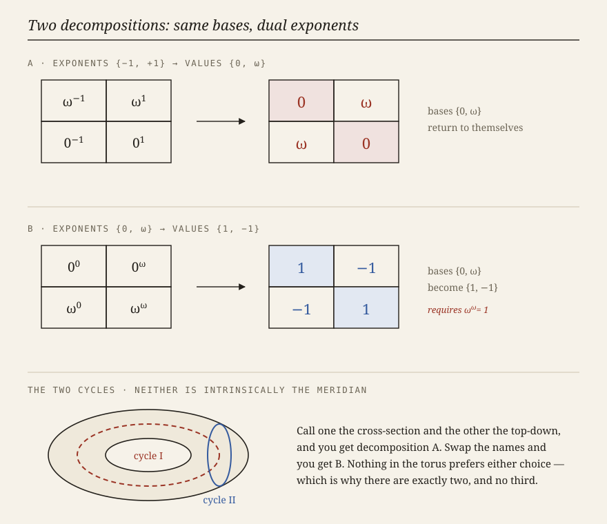
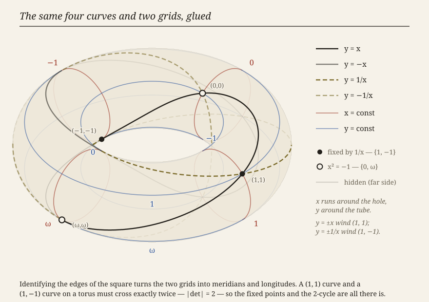

Why nothing closed — and what the residue turned out to be
Six successive attempts to close the eight exponential schemas each failed at a different cell. The natural reading was that six candidate law-sets were each slightly wrong. The correct reading is that all six were being checked against the wrong kind of object. Every value the closure problem was anchored to — including 0^ω = −1 itself — is a projection, not a conserved quantity. Once that is admitted the six failures become one, the residue everything was missing acquires a name, and the carrier turns out to be a familiar object rather than a mystery.
The four-by-four table of unit constants was doing the work of ground truth. But the link 1^x = x^0 ≈ 1 has its collapse to 1 marked lossy — which makes the entire x^0 column the base-1 curve, equal to 1 only downstairs. Follow that outward and every cell falls the same way. The last to go is the anchor:
This is not a new concession. Powers of the Zero's first footnote already calls the value "a normalization, not a theorem," and notes that the log₀(−1) = ω check "just restates the choice in a mirror." A gauge choice restating itself is the signature of a section through a fiber, not an equation. Where the Choices Show says it louder — the value "is not a fundamental constant — it is the fingerprint of ordinary multiplication." Coordinate-dependent is what a projection is. Both statements were already on the page; neither was allowed to touch the anchor.
A theory that can retreat upstairs whenever it collides is a theory that cannot be wrong. The rule preventing that was already written, in a different chapter, for a different reason:
| Claim | Floor | Status |
|---|---|---|
| schema = schema (a link) | upstairs | conserved; falsifiable by pivot collision |
| schema = constant (an evaluation) | downstairs | a projection; must be written ≈ |
That is slot-closure's join, don't resolve, and it turns out never to have been about syntax. Evaluation is projection. Discharging a slot to something outside the exponential language is the act of stepping down a floor. The bar on evaluation, and the = / ≈ discipline of Cancellation as an Operation, are one rule stated twice — by two arguments, five chapters apart.
So the escape hatch closes in the right place. Links collide or they do not, and that is testable. What is forbidden is checking a link against a value — precisely the error the six law-sets were built on.
With the anchors gone, the shape reads off directly. 0ⁿ sits at grade +n and ωⁿ at grade −n, for every n, unbounded both ways — infinite rings inward, infinite rings outward. A direction that never closes is not a cycle, so the object is not a torus:
A cylinder. The graded part — 0 behaving as a formal variable with ω = 0⁻¹, grades adding — is a Laurent ring, which is exactly slot-closure's "trace ring"; 0^ω is what lives outside it.2

Read radially, the structure is an ordering — a chain descending to the centre, ωⁿ > ω > 0 > 0ⁿ — with 1 and −1 antipodal on the unit ring, ninety degrees from 0 and ω. The ω-exponents leave the plane entirely. That is slot-closure's puncture — integer powers visible to the trace algebra, the wrap in a sector it cannot represent — put somewhere one can see what it costs.
If ω² required a third direction perpendicular to the first two, and ω³ a fourth, the carrier would be infinite-dimensional and ℂ* would be the wrong object. It does not. 0 and ω have sum s = 0 + ω and product 0·ω = 1, so they are the two roots of one monic quadratic:
So ω² lies in the span of {1, ω}; the other root checks, 0² = s·0 − 1 = (0² + 1) − 1. The nesting is therefore not an unbounded stack of perpendicular axes — it is unbounded winding in the one perpendicular circle, which is exactly what infinite order supplies. The infinite thread-count and the rank-two carrier were never in tension.
If an exponent decomposes into an in-plane integer part and an out-of-plane ω part, then 0·ω in an exponent slot has two readings that were never the same object:
The Reversible One opened on exactly those two readings disagreeing, and diagnosed it as a false power rule. The geometry says something more specific: a point in the plane and a point off it were being written with one glyph. It also gives 0^(ω²) — stalled since it was first raised — a route:
and s = 0 + ω is a cross-grade sum — The Addition Problem's wound. So 0^(ω²) is not unanswerable. It is answerable exactly as well as the addition is, and no better.
papers/3 reaches the same carrier from representation theory: SO(2) and SO(1,1) "are two real forms of one complex torus ℂ*," differing by a Galois twist — and, the line that matters, every algebraic identity descends to both real forms; compactness does not. Algebraic identities are the links. Compactness, cancellation, values are downstairs. That is the two-floor criterion above, arrived at independently and years earlier.
Place the constants by their behaviour under σ: x ↦ 1/x. Its fixed points are x² = 1, so 1 and −1 sit antipodally; its 2-cycle is 0 ↔ ω, so those sit at the quarter turns between them. That is the ordering Powers of the Zero already uses for its bijection.

The four functions compose:
Classically this is the Klein four-group — finite, abelian, four elements, which is why there appear to be exactly four curves. Two of those equalities fail here, and it is worth being exact about which. In quarter-turn coordinates on the cover — constants at u = 0, 1, 2, 3 for 1, 0, −1, ω, one full turn = 2ω = 4 — reciprocal is the reflection r: u ↦ −u and negation the half-turn n: u ↦ u + 2. Then:
Both are reflections, and each squares to the identity exactly. So nr is not where the failure lives. They are, however, different reflections, differing by a translation of one full turn — and n is no longer an involution either, since n² is that same full turn: trivial downstairs, the deck generator upstairs. A half-turn generator together with a reflection generates:
| Piece | What it is here |
|---|---|
| the ℤ | the winding — π₁, the sheets, the residue generator |
| the ℤ/2 | the Galois twist — the two real forms, the two decompositions, slot-closure's ρ |
| alternating words nrn, rnr, … | the nesting: bundles within bundles |
So the four curves are not four. They are two generators and their first product, and the group they generate is infinite. The infinite thread-count is not an added assumption; it is a consequence of the four curves plus non-commutation.

Glue the square's edges and the two grids become meridians and longitudes. In that presentation y = ±x wind (1, 1) and y = ±1/x wind (1, −1), so any curve of the first class meets any curve of the second exactly |det| = 2 times.

This replaces a guess. slot-closure had to estimate the pivot budget by feel — "two schemas may safely cross once, perhaps twice; three crossings and they are probably the same curve." Intersection number settles it: two curves in each class, each pair meeting twice, is eight crossings, exactly, with no room for a ninth.
| y = 1/x | y = −1/x | |
|---|---|---|
| y = x | (1,1), (−1,−1) | (0,0), (ω,ω) |
| y = −x | (0,ω), (ω,0) | (1,−1), (−1,1) |
The four in bold are the ordered pairs, and they are distinct points on the surface: (0,ω) is not (ω,0). So the non-commutation of negation and reciprocal is not a posit — it is forced by intersection theory. 1/(−1) ≠ (−1)/1 entered this thread as a structural proposal in want of an argument; the count supplies one, independent of anything algebraic. It also means the four crossings usually drawn are half the picture, and the half that was missing is exactly the half that carries the ordering.
Five separate things were owed at the start of the day: the honest power rule's correction term; the index arithmetic for the sheets; the amount 0^(2ω) fails to close by; the (mod 2π) in The Reversible One; and the winding number of the planned Chapter 17. They are one object, and it now has a formula:
— the failure of negation to be an involution; equivalently the commutator of negation and reciprocal; equivalently the amount by which the two orderings 1/(−1) and (−1)/1 differ. All three are one translation, of one full turn, and it generates π₁(ℂ*) = ℤ. In coordinates: n²: u ↦ u + 4, and [n,r]: u ↦ u + 4. This is an improvement in kind rather than degree: the outstanding debt is no longer what is the missing object but how does a known object compose.
It also explains why the fraction-order distinction needs the infinite structure specifically, and not merely some structure. With 0^ω of finite order k, winding is mod k and the two orderings re-identify after k turns. Only with ℤ sheets does the distinction never collapse.
papers/3 places the Hopf fibration at level two of the doubling tower — "b/a ∈ ℙ¹(ℂ) = S², unit quaternions acting through SU(2) → SO(3)." Since the Hopf map is a ratio, and this note is about ratio order being conserved, the two are worth testing against each other rather than admired side by side.
The Euler-class test passes, but proves little. For the bundle S¹ → S³ → S² the connecting map π₂(S²) → π₁(S¹) is an isomorphism ℤ → ℤ, so the fiber's winding is the bundle's Euler class. R is the deck generator, so it corresponds to Euler class ±1 — which the Hopf bundle has. But both sides of that comparison are "the generator," so agreement was close to guaranteed and carries almost no information.
The discriminating test is the index. Negation translates by two quarter-turns and the deck group is generated by four, so n is a square root of the deck generator and the translation group properly contains the deck group at index 2. That is a double cover, and the algebra notices it: a full turn is n², which acts trivially downstairs and nontrivially upstairs. This is the behaviour of SU(2) → SO(3) — a 2π rotation is the identity below and −1 above. The double cover was named in papers/3 and the index-2 sublattice was noticed here as a lattice fact; they are the same ℤ/2.
So the direction of explanation runs the other way. 0^ω ≈ −1 is an output, not an input — ω is the exponent carrying 0 to the half-turn, and −1 is where the half-turn lands downstairs. Chapter 7 had to choose that value and said so in a footnote. Once negation is geometric, it is derived.
The same reversal covers the exponent rule. x^0 = 1^x was introduced to stop x^0 = 1 from discarding the exponent; the geometry says why it cannot be collapsed further. The base-1 family is a genuine curve upstairs — it winds — and only a point downstairs. Writing x^0 = 1 is projecting that curve onto its image, which is a loss and not an identity. So the invariants the older algebra treated as constants are exactly the coordinates this structure has directions for, and each is removed by exhibiting the direction it was hiding.
Chapters 7–9 are not damaged. They are downstairs, and exact there — which is what "exact" was always describing. i = 0^(ω/2), the closing circle, the roots of unity by hand: all true, all shadows, none disturbed. What was wrong was borrowing them upward as ground truth for schema identities. slot-closure guessed this ending in its final paragraph: the valuation rebuild "is not refuting the circle; it is showing the circle never lived in the integer-power ring to begin with."
The central move — that apparent contradictions are distinct points over one projection — can absorb any collision whatsoever. Used without discipline it converts a falsifiable theory into an unfalsifiable one, which is a worse outcome than a broken theory. Three guards, each of which can fail: